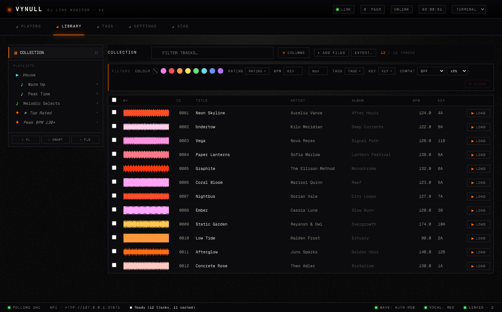
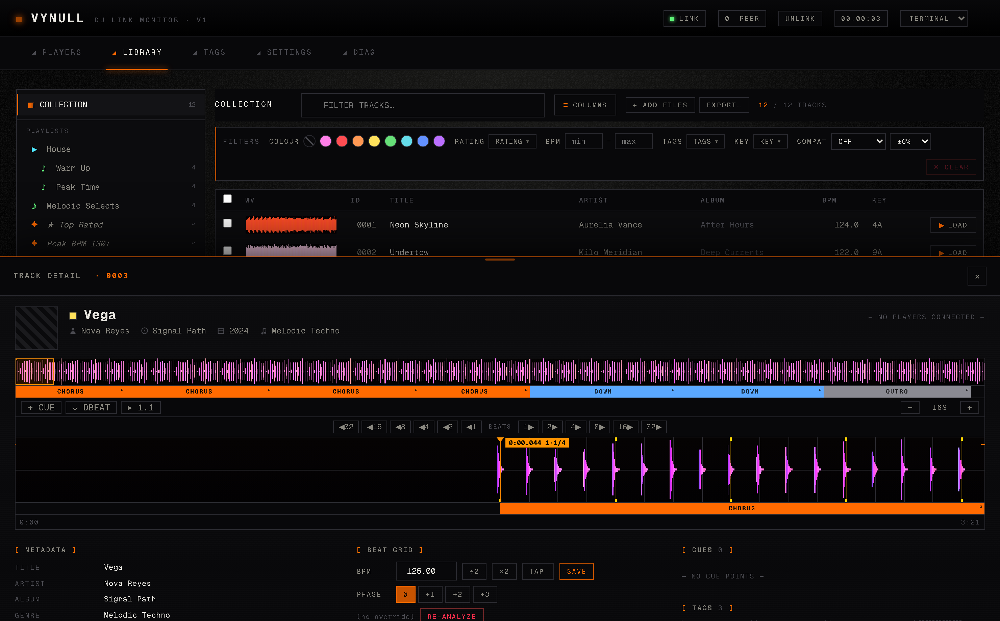
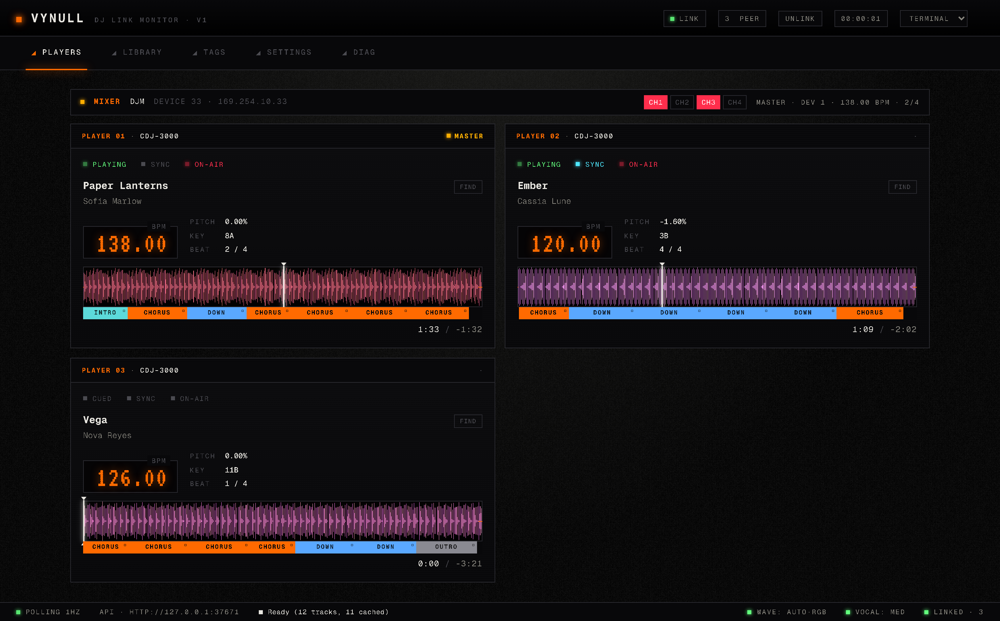
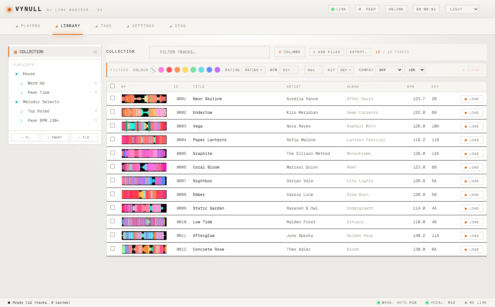

A virtual CDJ / rekordbox source and library manager for Linux. Point it at your music and CDJs see it as a connected library over Pro DJ Link, with color waveforms, beat grids, and cues.

assets/screenshot-webui.png
assets/screenshot-detail.png
assets/screenshot-players.pngassets/theme-terminal.pngassets/theme-slate.png
assets/theme-light.png* rekordbox's master.db is encrypted — importing it requires the database key (see the README).
# build (Go 1.21+, ffmpeg on PATH) git clone https://github.com/vynulldev/vynull && cd vynull go build -o vynull . # serve your library to CDJs on the link-local network ./vynull --interface eth1 --music-dir ~/Music --web # or start empty and add tracks via the API / web UI ./vynull --interface eth1 --web
Vynull is a DJ library application that interfaces directly with your Pioneer CDJ/XDJ hardware: load tracks from your Linux PC straight onto the decks — no rekordbox, no USB sticks, no export step. It speaks Pro DJ Link, so the players see your machine as a rekordbox source on the network and browse and load your music with waveforms, beat grids, and cues, exactly as if it came from rekordbox. Vynull analyzes your tracks itself (BPM, key, beat grids, phrases) and gives you a browser UI for tracks, playlists, and cues.
Yes — that's a big part of why Vynull exists. rekordbox itself has no Linux version, but Vynull imports your library (tracks, playlists, cues, grids, tags, artwork) and serves it to CDJ/XDJ players over Pro DJ Link, natively on Linux.
No. Vynull runs standalone: point it at a music folder, or manage a library through the built-in web UI, and it analyzes tracks itself (BPM, beat grids, waveforms, key, phrases). If you already have a rekordbox or Traktor library, you can import it — tracks, playlists, cues, tags, and artwork.
CDJs discover sources over Pioneer's undocumented Pro DJ Link protocol. Vynull speaks it: it announces itself as a rekordbox source, answers the decks' browse and metadata queries, and serves the audio and analysis files the same way rekordbox does. The protocol understanding builds on years of community reverse-engineering — see the acknowledgements in the README.
No. Vynull is an independent, unofficial project, not affiliated with or endorsed by Pioneer DJ / AlphaTheta. It exists because the gear is great and the protocol was worth learning.
Imports only read your library — Vynull keeps its own data alongside and never writes back to rekordbox's files. Back up before importing anyway; that's just good practice with a library you care about.
Yes — FLAC, WAV, and AIFF are served natively with the right decoder hints so the
deck picks the correct decoder, alongside MP3 and M4A/AAC. For older decks that can't
decode lossless over the link there's a --transcode option that converts to
MP3 on the fly.
Developed and hardware-verified against a CDJ-2000NXS2 and a DJM mixer. Anything speaking standard Pro DJ Link should largely work, but other models are untested — reports welcome.
Linux only (x86-64 and ARM64) — it runs happily on a Raspberry Pi next to your decks. There are no current plans for other platforms.
Honestly: not yet. It's a hobby project that speaks a reverse-engineered protocol; expect the occasional strange deck behaviour. It's great for the practice room and for tinkering — treat anything more as living dangerously.
Free and open source, GPLv3. The code, the protocol notes, and the analysis pipeline are all in the repository.
Vynull runs on Linux (x86-64 or ARM64). You'll need ffmpeg on your PATH, and a
network interface on the same subnet as your CDJs (typically a 169.254.x.x link-local
connection). The default rekordbox mode needs no privileged ports; appearing as a
CDJ-USB source (--mode cdj) additionally needs UDP 111 — see the README.
It's a hobby project: expect the occasional rough edge, and back up your rekordbox library before importing.